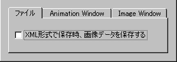
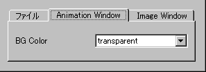
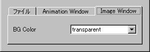

●Option
・ファイル

XML形式で保存時、画像データを保存する・・・この項目をチェックするとXML形式で保存する時に
イメージウィンドウ内のデータを保存するようになります。
保存に時間がかかるのでオススメはしません。
・Animation Window

BG Color・・・アニメーションウィンドウの背景色を指定します。
・Image Window

BG Color・・・イメージウィンドウの背景色を指定します。